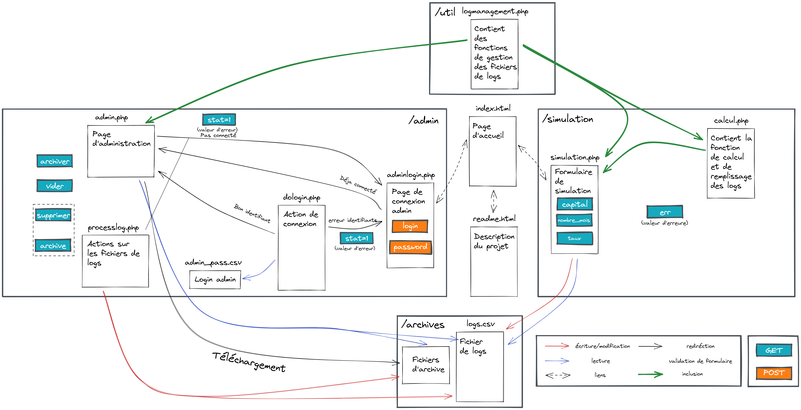

Ceci est la documentation de notre projet PHP
Sujet du projetIl suffit d'aller sur la page simulation.php, ou trois champs sont disponibles
Il faut ensuite cliquer sur le bouton Calculer et le résultat s'affichera en dessous du bouton, en vert.
Pour voir les 10 dernières simulations, il y a un bouton Historique en dessous de l'encadré principal. Il permet de faire apparaitre un pop-up modal contenant l'historique.
Pour se connecter en tant qu'administrateur, il faut aller sur la page adminlogin.php. Il
faut
ensuite remplir les
champs Login et Password et cliquer sur Connexion.
La page admin.php permet de voir l'historique des transactions effectuées depuis le dernier
archivage.
Elle permet aussi de vider le fichier d'historique (logs.csv)
ou de l'archiver (c'est-à-dire le renommer en un autre nom de fichier disponible, du type
logs.csv.2)
Un bouton Déconnexion est aussi présent
Si dessous la liste des fichiers php et leur utilité
Page principale qui permet de remplir le formulaire pour la simulation et de consulter l'historique.
L'action
du
formulaire est non déportée et les fonctions permettant de réaliser le calcul sont dans
calcul.php
et
importées
via require
Les parameters GET utilisés sont
Contient les fonctions de calcul de prêt et d'écriture dans les logs
Page de formulaire de connexion administrateur
Elle utilise le paramètre GET stat pour afficher un message d'erreur ou de déconnexion réussie
Elle envoie les paramètres POST login et password a la page
dologin.php pour réaliser la connexion.
Page qui vérifie les identifiants administrateur
Elle utilise les paramètres POST login et password et les compares
a ceux
stockés
dans admin_pass.csv.
Le mot de passe est hashé en sha256.
Si la connexion réussie, elle ouvre une session et met le champ de session admin a la
valeur
admin elle redirige
vers admin.php
Sinon, elle redirige vers adminlogin.php?stat=1
Page d'administration
La page vérifie si le champ de session admin vaut bien admin et si non
redirige
vers
adminlogin.php?stat=1
La page affiche l'historique contenu dans logs.csv sous forme de tableau
Elle contient les boutons archiver et vider qui redirigent vers
processlog.php?archiver
et processlog.php?vider respectivement
Elle contient aussi un bouton de déconnexion qui redirige vers logout.php
Page servant à faire différentes opérations sur les logs (logs.csv)
Elle commence par vérifier si l'utilisateur est admin en vérifiant sir le champ de session
admin
vaut admin
Si ce n'est pas le cas elle redirige vers adminlogin.php?stat=1
Ensuite, si le paramètre GET archiver est présent, elle archive les logs ou si le paramètre GET vider est présent elle les vide.
C'est expliqué dans la partie Administrateur
Elle redirige ensuite vers admin.php
Page de déconnexion
Elle détruit la session actuelle et redirige vers adminlogin.php?stat=2
Fichier de logs
Format : | Adresse IP du client | Montant | Capital | Nombre de mois | Taux | |----------------------|---------|---------|----------------|------|
Fichier contenant les identifiants administrateurs
Format : | Login | Mot de passe hashé en sha256 | |-------|------------------------------|

© 2021 Bilel Medimegh, Eliott Rogeaux, Benjamin Elbaz, Stéphane Lay, Raphael Gruet